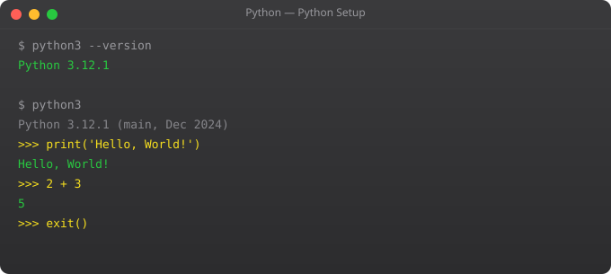

Python Full Tutorial -- Part 1: Introduction and Setup

Python is the programming language that finally made me feel like coding was actually enjoyable. I had tried JavaScript before, got confused by the async weirdness, moved to Java, felt buried under boilerplate. Then I tried Python. Within two hours I had a script reading CSV files, filtering data, and printing results. No curly braces. No semicolons. No type declarations. Just clean, readable logic that looked almost like English.
That is Python's core promise: code that reads like it thinks. Guido van Rossum designed Python in 1989 with readability as the primary goal, not performance, not speed-of-development, not terseness. Just clarity. And that decision made Python the most beginner-friendly programming language that is also used professionally at Google, Netflix, Instagram, Dropbox, and in virtually every data science and machine learning team in the world.
In this series we go from zero to a real production-quality Python project. No prior programming experience needed. We will build actual skills, not just toy examples. Let us start with getting Python set up and writing your first program.
Why Python in 2026
Python is the number one language for data science and machine learning. It is the default scripting language for DevOps and cloud automation. FastAPI and Django are widely used for building APIs. Pandas and NumPy power data analysis in finance, healthcare, and research. AWS Lambda, Google Cloud Functions, and Azure Functions all have first-class Python support.
Learning Python opens doors across multiple high-paying career paths simultaneously: software development, data engineering, machine learning, DevOps, and automation. It is one of the few investments that genuinely pays dividends across specializations.
Installing Python
sudo apt update
sudo apt install python3 python3-pip python3-venv -y
# Verify installation
python3 --version # Should show Python 3.11 or higher
pip3 --versionbrew install python3
python3 --versionOn Windows, download the official installer from python.org. During installation, the single most important step is checking "Add Python to PATH" checkbox. Without this, Python will install but your terminal will not find it. After installation, open Command Prompt and type python --version to verify.
The Python REPL
The REPL (Read-Evaluate-Print Loop) is Python's interactive interpreter. You type a line of Python, press Enter, and Python evaluates it immediately and shows the result. It is perfect for experimenting and learning.
$ python3
Python 3.11.5
>>> 2 + 2
4
>>> "Hello" + " " + "World"
'Hello World'
>>> name = "Suraj"
>>> print(f"Hello, {name}!")
Hello, Suraj!
>>> 10 / 3
3.3333333333333335
>>> 10 // 3
3
>>> type(42)
<class 'int'>
>>> exit()I use the REPL constantly -- even after years of writing Python. When I am unsure how a function behaves or want to test a quick idea, I open the REPL and try it. Instant feedback, no files to create. It is the fastest learning tool in Python's arsenal.
Your First Python Script
Create a file called hello.py and write your first Python program:
#!/usr/bin/env python3
# Lines starting with # are comments -- Python ignores them
# Print text to the screen
print("Hello, World!")
# Variables -- no type declaration needed
name = "Suraj"
age = 25
height = 5.11
is_developer = True
# f-strings: embed variables directly in strings
print(f"Name: {name}")
print(f"Age: {age}")
print(f"Developer: {is_developer}")
# Basic arithmetic
print(10 + 5) # 15
print(10 - 3) # 7
print(10 * 4) # 40
print(10 / 3) # 3.333... (float)
print(10 // 3) # 3 (integer division)
print(10 % 3) # 1 (remainder)
print(2 ** 10) # 1024 (power)python3 hello.pyPython Indentation -- The Critical Rule
Python uses indentation to define code blocks. This is not style -- it is syntax. Incorrect indentation is a SyntaxError. Use exactly 4 spaces per level (never tabs).
# CORRECT
if True:
print("This is indented correctly")
print("Still in the if block")
print("This is outside the if block")
# WRONG -- causes IndentationError
if True:
print("This will crash!")Setting Up VS Code for Python
VS Code is the most popular Python editor. Install these extensions: Python (by Microsoft) for syntax highlighting and debugging, Pylance for intelligent autocompletion and type checking, and Black Formatter for automatic code formatting on save.
pip3 install black
# VS Code settings.json
# "editor.formatOnSave": true,
# "[python]": {"editor.defaultFormatter": "ms-python.black-formatter"}Python Built-in Help System
help(print) # Full documentation for print function
help(str) # Documentation for string type
dir(str) # List all string methods
help(str.upper) # Help for a specific method
help(list) # All list methodsThe help() function is one of Python's most useful features. Every function, every class, every module has built-in documentation accessible from the REPL. You can learn Python from inside Python itself.
Python vs Other Languages
If you have programmed in JavaScript or Java before, the biggest adjustments are: no curly braces (indentation defines blocks), no semicolons at line ends, dynamic typing (no need to declare variable types), and no separate compilation step (Python is interpreted). These differences make Python faster to write but require careful attention to indentation and types.
Frequently Asked Questions
Is Python good for beginners?
Python is consistently the top recommendation for beginners. Clean syntax, no semicolons, interactive REPL, and it is used professionally in data science, DevOps, and web development. It is a language that grows with you.
Python 2 or Python 3?
Always Python 3. Python 2 reached end-of-life in January 2020. All modern libraries, tutorials, and jobs use Python 3. There is no reason to learn Python 2 unless maintaining old legacy code.
What is the best Python editor for beginners?
VS Code with the Python and Pylance extensions. Free, cross-platform, great autocomplete, built-in debugger, and integrated terminal. PyCharm Community Edition is also excellent but heavier.
How long does it take to learn Python basics?
With 1-2 hours daily practice: 4-6 weeks for basics. 3-6 months to build real projects confidently. The key is building actual projects, not just following tutorials passively.
What can I build with Python?
Web APIs (FastAPI, Flask, Django), automation scripts, data analysis (pandas, NumPy), machine learning models, web scraping, CLI tools, DevOps automation, and cloud automation with boto3. One of the most versatile languages available.
Key takeaways
- Python's strength is readability. If a Python file looks ugly, you're probably writing it wrong — go back and simplify.
- Use a version manager (pyenv, asdf) and virtual environments (`venv`, `uv`) from day one. System Python is for the OS, not for your projects.
- Python 3.11+ has noticeable speed improvements. Don't use 3.9 for new projects — there's no reason to.
- Forget memorising syntax. Focus on the thinking patterns: what's a list vs a generator? What's mutable vs immutable? Those concepts persist; syntax googles.